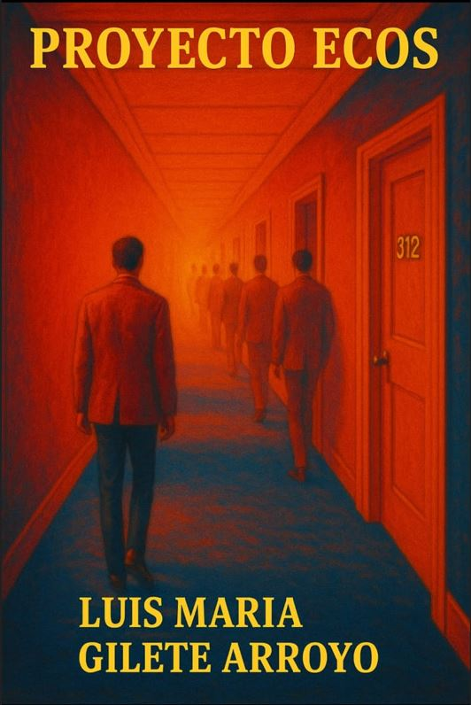

Una novela sobre identidades rotas, memoria fragmentada y un sistema que no sabe curar. Sé de los primeros en leer el primer capítulo GRATIS.
Para recibir el primer capítulo, haz clic en el botón de abajo. Se abrirá un formulario seguro de Google. Una vez completado, tus datos quedarán registrados para enviarte el capítulo y futuras novedades.
El formulario se abre en una pestaña nueva. Cuando lo envíes, podrás volver aquí o seguir leyendo más abajo.